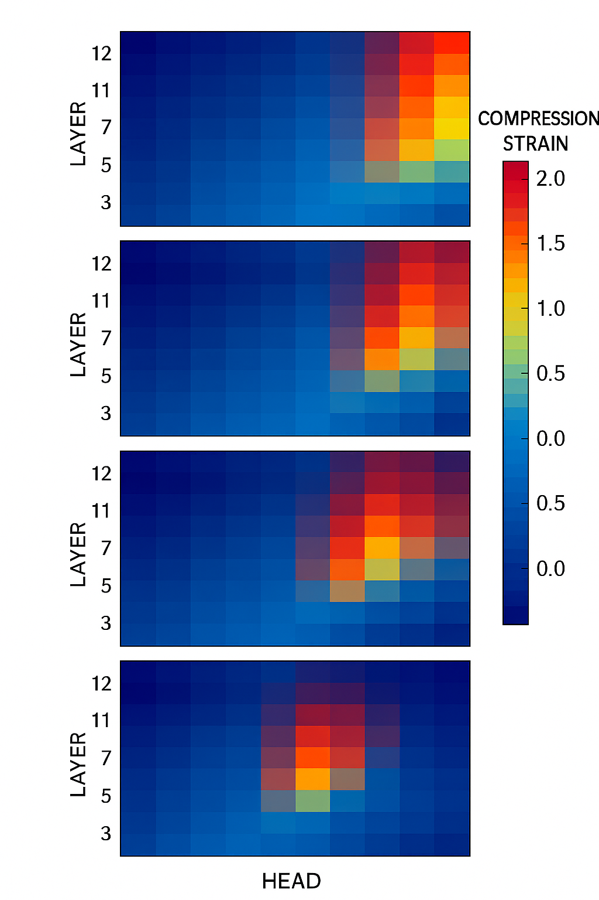

CAI Diagnostics
Visual diagnostics and deployment metrics for CAI
CAI Diagnostics provides the three tools that turn Compression-Aware Intelligence from theory into an operational reliability layer for modern language models. These diagnostics let engineers see where a model destabilizes, measure its internal resilience, and optimize it without sacrificing coherence.
CAI is designed to answer a single question: where does the model break before the output breaks?
1. Instant compression strain diagnostic
The first diagnostic is a live debugging view. For each prompt, it returns:
- The model output text.
- A compression strain heatmap across layers and heads.
- A scalar Compression Tension Score (CTS) for that run.
This reveals internal instability that appears before surface hallucination, contradiction, or drift.
What engineers use it for
- Identifying the exact layer and head where meaning collapses.
- Comparing strain across paraphrased versions of the same prompt.
- Reproducing failure cases that were unstable but previously untraceable.
- Guiding prompt design, routing, and fine-tuning.
Traditional metrics show errors after they happen. CAI shows the formation of the error inside the network. This is pre-failure visibility.
2. Contradiction Resilience Scoreboard
Modern deployment needs model selection based not only on accuracy but on internal stability under rephrasing. CAI introduces the Contradiction Resilience Score (CRS), defined as CRS = 1 / CTS. CRS measures a model's ability to preserve meaning across semantically equivalent inputs.
What the scoreboard provides
- Stability ranking of models by CRS on contradiction focused tests.
- Stress-test results under controlled contradiction templates.
- Aggregate CTS, distortion indices, and semantic displacement measures.
- Comparison with KL divergence to show that CAI metrics rise earlier than distributional metrics.
For safety-critical or regulated use, the model with the highest CRS is the model least likely to contradict itself or hallucinate under distributional shift. CRS is intended to be a deployment metric, not only a research signal.
3. CAI guided intelligent pruning
CAI also turns compression strain into a practical optimization signal. Instead of pruning by weight magnitude alone, CAI guided pruning uses stability:
- Preserve low-strain regions that carry stable meaning.
- Treat high-strain regions as candidates for removal, retraining, or architectural change.
Two models compared
- Train a baseline magnitude-pruned model to a target parameter budget.
- Train a CAI guided pruned model at the same budget, protecting low CTS regions.
- Measure CTS, CRS, hallucination rate, and accuracy for both.
The expected outcome is that the CAI guided model:
- Has lower CTS and higher CRS on average.
- Produces fewer contradictions under paraphrasing.
- Shows a lower hallucination rate on stress tests.
- Retains similar or better task accuracy.
This makes CAI a performance and cost-reduction tool as well as a diagnostic layer. The aim is smaller, cheaper models that remain coherent and stable.
Where CAI diagnostics is heading
- A public interactive strain diagnostic that works across arbitrary prompts.
- An open leaderboard that ranks models by CRS and internal coherence.
- A reference implementation of CAI guided pruning for open-source model families.
The purpose of these diagnostics is to make internal stability measurable, comparable, and optimizable across the model ecosystem.